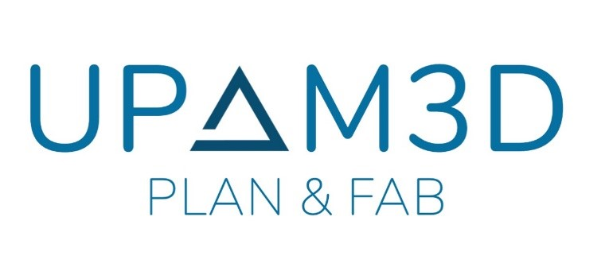
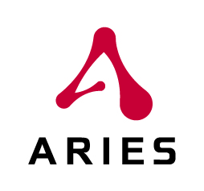
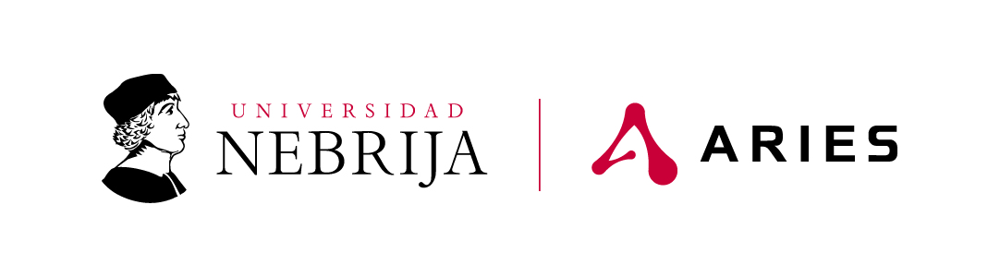

01
TFG · Procesamiento automático de documentos
Simuloteca3D
Aplicación web en colaboración con Grupo ARIES y el Hospital Gregorio Marañón. Plataforma para extraer, organizar y procesar información de documentos médicos en PDF y PowerPoint, incluyendo texto, tablas, imágenes y detección de duplicados.
Ver en GitHub ↗En colaboración con


